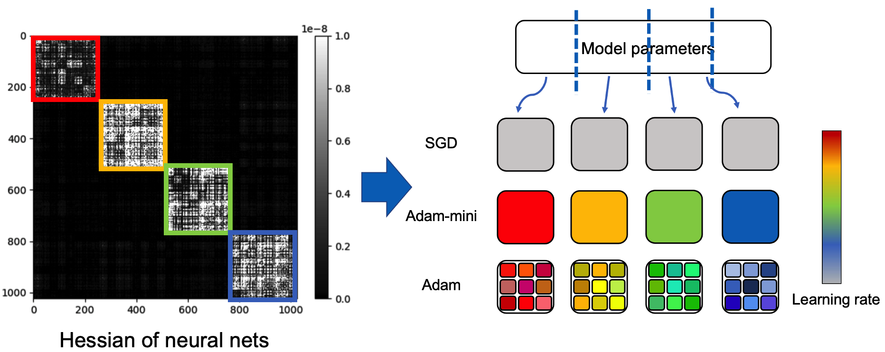

SGD固定步长 顺梯度走
优化算法基础
反向传播只负责把梯度算出来，怎么拿梯度去更新参数，是优化器的工作。从最朴素的 SGD，到加惯性的动量，再到自适应的 Adam，再到把权重衰减拆正的 AdamW——优化器的演进史，就是一部"怎样在百亿参数的崎岖 loss 曲面上又稳又快地走"的工程史。本节讲清四代优化器的动机，给出大模型时代的默认选择。
一图看懂
四代优化器，每一代都针对上一代的硬伤做加法：SGD 走得稳但慢、易卡在鞍点；动量给它装上惯性冲出洼地；Adam 再给每个参数配自己的步长，解决各方向曲率不均；AdamW 最后把权重衰减从梯度里拆出来，避免它被自适应学习率吃掉。
- 卡鞍点 慢
- 动量 SGD累加历史梯度 加惯性各方向步长仍统一
- Adam每参数自适应步长权重衰减被自适应抵消
- AdamW权重衰减与梯度解耦
梯度下降的三种吃法
梯度下降的更新规则只有一行：
$$\theta \leftarrow \theta - \eta \,\nabla_\theta L$$
但"用多少数据算这个梯度"会带来三种变体，差异不小：
| 变体 | 每次用的数据 | 梯度估计 | 特点 |
|---|---|---|---|
| 批量 GD | 全部训练集 | 真实梯度，无噪声 | 方向准，但一步要扫全量数据，且无法利用 GPU 并行的多组样本 |
| 小批量 GD | 一个 batch（几十到几千） | 梯度的无偏估计，带噪声 | 现代训练的标准做法，平衡速度与方向 |
| 随机 GD（SGD） | 单个样本 | 方差极大、极嘈杂 | 理论分析常用，工程上几乎没人真用 |
这里有个术语混用的坑：大家嘴里的"SGD"在工程语境下其实指的是小批量梯度下降，而不是一次一个样本。本节后文提到 SGD，都按这个约定。小批量带来的一点噪声其实是好事——它能让优化器跳出纯批量 GD 容易卡住的鞍点和浅洼。
工程上还有一个隐藏约束：batch 太小，GPU 的并行算力用不满，每一步的"墙钟效率"低；batch 太大，等效学习率要跟着调（见下文 linear scaling rule），而且噪声太小反而不易逃离鞍点。所以选 batch size 是"算力利用率"和"优化质量"之间的折中，常见取值从视觉任务的几十，到预训练的上百万 tokens 不等。
一句话直觉
小批量梯度 = 真实梯度 + 噪声。噪声是免费的"扰动"，帮优化器逃离过于平缓的鞍点，代价是收敛时会来回抖动。
为什么"各方向曲率不均"是核心难题
要理解后面几代优化器在解决什么，先要明白 loss 曲面有多"畸形"。真实模型的 loss 关于参数的 Hessian 矩阵（曲率）在不同方向上可以差好几个数量级：有的方向陡得像峭壁，有的方向平得像高原。用一个二维玩具函数感受：$f(x,y)=50x^2+0.5y^2$，它在 $x$ 方向陡（$x$ 的系数 50）、在 $y$ 方向平（系数 0.5）。从 $(1,1)$ 出发、用统一学习率 $\eta=0.01$ 走梯度下降，梯度是 $(100x,\; y)$：
| 步数 | $x$ | $y$ | 发生了什么 |
|---|---|---|---|
| 0 | 1.000 | 1.000 | 起点；梯度 $(100,\;1)$，陡平差 100 倍 |
| 1 | 0.000 | 0.990 | $x$ 一步迈过头（陡方向震荡），$y$ 只挪了 1% |
| ~458 | 0.000 | 0.010 | $y$ 还要约 458 步才从 1 降到 0.01 |
这个玩具的"陡峭比"在数学上叫条件数（condition number）$\kappa=\lambda_{\max}/\lambda_{\min}$，这里就是 $100/1=100$。真实大模型的条件数常高达 $10^6$ 以上，困境被放大百万倍——这正说明"统一学习率"从根上不够用。好消息是：后面两代优化器恰好分别针对"卡住"和"曲率不均"这两件事。
关键困境在于：学习率必须小到不让陡方向（$x$）发散，可一旦为此把 $\eta$ 调小，平方向（$y$）就几乎不动、训练龟速。一个统一的学习率没法适配所有方向——这直接催生了"动量"（治卡住）和"自适应学习率"（治曲率不均）两代改进。下面先解决"易卡住"。
SGD：最朴素的走法，以及它的硬伤
SGD 的更新就是上面那行公式，每个参数都按同一个学习率 $\eta$ 沿负梯度走。它简单，但有两个工程硬伤：
- 各方向步长统一。loss 曲面在不同参数方向上曲率可以差几个数量级，用同一个 $\eta$ 走，在陡方向会震荡甚至发散，在缓方向则龟爬不动。学习率只能迁就最陡方向取小，于是整体很慢（上一节的玩具函数就是例子）。
- 容易被鞍点和浅洼卡住。梯度在接近鞍点时趋于零，SGD 失去惯性，会在那里停滞不前。
在百亿参数的真实模型里，这两个硬伤被剧烈放大：参数空间的"鞍点密度"随维度升高而急剧上升，纯 SGD 几乎必然在某个鞍点附近磨蹭很久；而条件数动辄百万倍，让"迁就最陡方向取小学习率"变得完全不可接受。这也解释了为什么现代大模型预训练几乎不会用裸 SGD。有人会想：那用牛顿法（直接用 Hessian 逆做二阶更新）不就好了？问题是 Hessian 有"参数数²"个元素，百亿参数下内存根本放不下，且 Hessian 可能不正定。所以工程上只能在"一阶梯度 + 各种技巧"这条路上走。
动量：给优化器装上惯性
动量（momentum）的思路来自物理：把参数位置比作小球，给它一个速度，让它积累历史梯度方向上的"动量"，从而冲过浅洼和鞍点。维护一个速度向量 $v$，把每步的梯度按比例累加进去：
$$v_t = \beta\, v_{t-1} + \nabla_\theta L,\qquad \theta \leftarrow \theta - \eta\, v_t$$
其中 $\beta$ 是动量系数，常取 0.9。效果是：梯度方向一致时速度持续累加、越走越快（在缓方向加速）；梯度来回震荡时正负抵消、速度被抑制（在陡方向消震）。两个硬伤的第二条被治了一半——有了惯性，更容易冲出浅洼。
接上一节的玩具：在平缓的 $y$ 方向，梯度方向始终一致，动量会把速度累积到稳态 $v \approx g/(1-\beta)=g/0.1=10g$，相当于把该方向的有效步长放大 10 倍——原本要 ~458 步，动量下大约 46 步就能到 $y\approx 0.01$。这正是"惯性在缓方向加速"的量化体现。$\beta=0.9$ 的直觉是"大约看最近 $1/(1-\beta)=10$ 步的加权平均"；$\beta$ 越大，记忆越久、惯性越强。
不过要注意：动量只治了"卡住"，并没有解决"陡平方向曲率差太大"。在上面的玩具里，$x$ 方向依旧会因为统一学习率而震荡——动量让 $y$ 变快，却没让 $x$ 变稳。真正让"每个方向各用各的步长"的是下一节的自适应学习率，它和动量叠加就成了 Adam。
动量有个变体叫 Nesterov 动量（NAG），先按速度"提前看一眼"再算梯度，理论上收敛更稳。在图像分类时代的 ResNet 训练里常用，大模型时代则被 Adam 系取代，了解即可。
自适应学习率：RMSProp 与 Adam
动量治了"易卡住"，但"各方向步长统一"的硬伤还在。自适应学习率优化器的思路是：给每个参数配一个自己的步长，按该参数历史梯度的幅度自动调节。梯度一直很大的参数，说明这方向陡，步长调小；梯度一直很小的参数，说明这方向缓，步长放大。这就正面回应了上一节"陡平方向曲率差 100 倍"的困境。
RMSProp 是最早可用的版本，用梯度平方的滑动平均来缩放步长。具体地，它维护 $v_t=\beta v_{t-1}+(1-\beta)g_t^2$，更新时把梯度按 $1/(\sqrt{v_t}+\varepsilon)$ 缩放——这相当于给每个参数做了一次"对角预条件"，陡方向（$v_t$ 大）自动变小、缓方向自动变大。Adam（Adaptive Moment estimation）则把动量（梯度一阶矩）和自适应（梯度二阶矩）合在一起，是这两个思路的集大成者：
$$m_t = \beta_1 m_{t-1} + (1-\beta_1)\,g_t \quad\text{（一阶矩，动量）}$$
$$v_t = \beta_2 v_{t-1} + (1-\beta_2)\,g_t^2 \quad\text{（二阶矩，自适应）}$$
$$\theta \leftarrow \theta - \eta\,\frac{\hat{m}_t}{\sqrt{\hat{v}_t}+\varepsilon}$$
其中 $\hat{m}_t, \hat{v}_t$ 是偏差修正（避免训练初期估计被 0 拖偏），$\varepsilon$ 是防止除零的小常数。Adam 的默认参数 $\beta_1=0.9, \beta_2=0.999, \varepsilon=10^{-8}$ 在绝大多数任务上都不用改。
「给每个参数一个独立步长」是不是真的有必要细到每个参数？2024 年的 Adam-mini 论文用一张插图把学习率的「粒度」讲得很直观：从 SGD 的一个学习率管全部，到 Adam 的每个参数一个学习率，中间其实存在一个更省的中间档——按参数块分组管理。下面这张图就是论文里的示意：

新手读这张图，抓两个点。① 横向上是「学习率的数量」从少到多：最左的 SGD 只有一个全局学习率，最右的 Adam 给每个参数单独一个学习率，Adam-mini 停在中间——它证明对大多数任务，把参数按曲率相近的块分组、每块一个学习率，效果已经足够。② 分组依据是 Hessian 结构：哪些参数对同一类损失方向敏感，就归到一组，这与「给每个参数单独配步长」的动机（各方向曲率不均）同源，只是用块级粗粒度换取了状态显存的大幅下降。
为什么值得关心一个优化器的「粒度」？因为每个参数的学习率不是白来的——Adam 必须为每个参数额外存一阶矩 $m$ 和二阶矩 $v$ 两份状态，百亿参数就是两份百亿量级的 fp32 张量。Adam-mini 把「每参数一份」压缩到「每块一份」，优化器状态显存可以省下可观的量，且在许多任务上收敛效果与 AdamW 相当。这正是「自适应学习率」这条思路的工程边界：不是越细越好，而是细到够用为止。想继续往下看不同优化器在显存上的账，跳到本页后面的「优化器的显存账」。
classDiagram
class Optimizer {
+step()
+zero_grad()
}
class SGD {
+lr
+momentum
}
class Adam {
+beta1
+beta2
}
class AdamW {
+weight_decay
}
Optimizer <|-- SGD
Optimizer <|-- Adam
Adam <|-- AdamW
为什么 Adam 成为默认
它同时治了两个硬伤：动量给惯性冲过洼地，自适应给每个参数自己的步长。对超参数也比 SGD 鲁棒得多，学习率稍大稍小都能跑。这份"好上手"让它长期占据主流。
新手最容易搞错
同一个学习率数字，在 SGD 和 Adam 里的物理含义完全不同。SGD 的每步位移是「学习率 × 梯度」，梯度为 10 就挪 $10\eta$；而 Adam 用二阶矩把梯度量级归一化后，每步位移约为「学习率」，与梯度大小基本解耦。所以把 SGD 调好的 $\eta=0.01$ 直接搬给 Adam，行为会天差地别；反之亦然。学习率不能跨优化器直接迁移，这就是为什么各家训练报告都会写明「我们用的优化器 + 学习率」，缺一不可。常见的适配起点是：SGD 用 $0.01\sim0.1$ 量级，Adam/AdamW 用 $10^{-4}\sim3\times10^{-3}$ 量级，然后各自做一次学习率找范围。
真实坑：Adam 的权重衰减失效
工程实践里常把 L2 正则（权重衰减）实现成"把权重的一小部分加进梯度"。但 Adam 会用自适应分母把这个额外项缩掉，使正则强度被严重稀释——同一组超参下，SGD+weight_decay 和 Adam+weight_decay 的实际正则强度根本不是一个量级。这是 Adam 到 AdamW 的直接导火索。
AdamW：权重衰减的正确姿势
AdamW 的核心改动只有一处：把权重衰减从梯度里拆出来，直接作用在参数上，不经过自适应缩放。
$$\theta \leftarrow \theta - \eta\,\frac{\hat{m}_t}{\sqrt{\hat{v}_t}+\varepsilon} \;-\; \eta\,\lambda\,\theta$$
看公式右半部分：$\eta\lambda\theta$ 这一项与梯度的自适应项并列、独立，不再被 $\sqrt{v_t}$ 缩放。后果是权重衰减的强度变得可预测、可对齐——同样的 $\lambda$ 在 SGD 和 AdamW 下作用量级一致，迁移实验结论变得有意义。
这一改动看似微小，影响却极大：它让大模型训练里的正则强度可复现、可比较，正则化与自适应学习率解耦后，两者可以独立调。今天主流大模型（Llama、Qwen、DeepSeek 等）的预训练几乎清一色用 AdamW，$\lambda$ 取值通常在 $0.01 \sim 0.1$ 量级，具体以各家技术报告为准。
从等价视角看：AdamW 在 SGD 意义下把权重衰减严格当作"解耦的 L2 正则"；而旧式 Adam+L2 则把衰减项乘进了自适应分母 $\sqrt{\hat v_t}$——当某参数梯度历史很大时，它的衰减被分母吞掉，正则几乎失效。所以想让权重衰减"真的起作用"，AdamW 才是正确实现。这一点在 Transformer 上尤其明显：embedding 等层的权重范数会随训练增长，若不真正做权重衰减，模型容易把某些权重训得过大。
stateDiagram-v2
[*] --> SGD
SGD --> Momentum: 加惯性冲出洼地
Momentum --> Adam: 每参数自适应步长
Adam --> AdamW: 权重衰减解耦
AdamW --> [*]
note right of Adam
缺点：L2 被自适应分母稀释
end note
学习率调度：warmup 与余弦衰减
优化器定了，学习率怎么随时间变化同样关键。训练初期，参数随机、自适应统计（$m,v$）还没攒够，直接上大学习率极易发散；后期靠近谷底，又该把步长收小好"精细对准"。大模型预训练的标配是 warmup（线性升温）+ cosine decay（余弦衰减）：先从小学习率线性升到峰值，再沿余弦曲线平滑降到接近零。
| 调度方式 | 形状 | 何时用 |
|---|---|---|
| constant | 全程不变 | 短训练、调试脚本 |
| step decay | 阶梯式跳降 | 旧范式，如今较少用 |
| cosine decay | 平滑降到近 0 | 预训练常用 |
| warmup + cosine | 先升后降 | 大模型预训练事实标配 |
下面这张交互图给出一份典型的 warmup+cosine 曲线（峰值 $10^{-3}$、谷底 $10^{-4}$、前 100 步升温、共 1000 步）。可以直观看到：开头一段贴合斜线上升，之后是平滑的余弦下落。
梯度裁剪：给更新量上保险
大模型训练里常出现"loss spike"——某一步梯度突然爆大，把参数一把带飞，之后要花很久才恢复。梯度裁剪（gradient clipping）是标配的保险：算出全局梯度范数，若超过阈值就整体等比缩小，不让任何一步走得太远。
- 拿到本步梯度 g
- 算全局范数 ‖g‖
- 拿到本步梯度 g
- ‖g‖ 大于阈值?
- 算全局范数 ‖g‖
- g = g · 阈值/‖g‖
- ‖g‖ 大于阈值?是
保持 g 不变- ‖g‖ 大于阈值?否
- 送去优化器更新
- g = g · 阈值/‖g‖
- 保持 g 不变
注意裁剪按"全局范数"而非逐参数，所以它改变的是步长上限、不改变更新方向，因此不会破坏前面各优化器的收敛性质。阈值常取 1.0（全局范数），是预训练里几乎必开的稳定手段。
学习率过大与过小：现象、诊断与修复
学习率是训练里最容易被乱调、也最能直接看出效果的超参。把它设错，再好的优化器也白搭。下面把"过大"和"过小"各自的现象、判断方法和修法讲透，并给一个具体数字例子，让你下次看到 loss 曲线就能对症下药。
学习率过大，典型现象是训练一开始 loss 就剧烈震荡，甚至跳上几个数量级、直接变 NaN。原因很简单：更新步长太大，一步就越过了谷底，甚至迈到损失更高的区域；在陡峭方向上，参数会在谷底两边来回横跳，像把球从坡上滚下去却刹不住车。用一个数字感受：假设某参数当前值 $\theta=1$，梯度是 10（相当陡），学习率若取 1.0，一步就是 $\theta=1-1.0\times10=-9$——参数一下翻到对面山坡上，这就是"发散"的微观过程。
诊断学习率过大，最直接的手段是看训练前几百步的 loss 曲线：如果 loss 不是平滑下降，而是剧烈锯齿甚至出现 NaN，几乎可以断定是学习率太大。修复也很标准：把学习率往小调一个量级重试（比如从 0.1 降到 0.01），或者给训练加 warmup，让前几步从很小的学习率开始，给参数和自适应统计一个缓冲期。大多数情况下，warmup 就够兜住前期的不稳定。
学习率过小，现象则完全相反：loss 缓慢下降、看起来"很稳定"，但训练几万步才走完别人几千步的路。用同样的数字感受：仍取梯度 10，若学习率只有 0.0001，一步只移动 0.001——从一个随机的初始点走到谷底需要天文数字步数，训练结束时模型还停在半山腰，表现为"训了很久却离最优解很远"。这类失败比发散隐蔽，因为它不报错、曲线也平滑，容易让人误以为一切正常。
诊断学习率过小，看 loss 的下降斜率即可：如果 loss 长期贴着地板往下"磨"，说明每步都在前进但太慢。修复方向是先做"学习率找范围"实验——从很小的学习率开始，指数增大跑几百步，画 loss 曲线，找到它开始平滑下降的那一段，取该区间的中上段作为初始学习率。这个流程也叫 learning rate finder，是快速确定合理量级的标准做法。
一个实用经验是：学习率宁可先用"偏大区间做扫描"，再收敛到"稳定下降区间的中段"。真正成熟的大模型训练，会把学习率调度交给 warmup 加 cosine decay，配合梯度裁剪兜底，让这个最敏感的超参在安全范围内自动运行——但理解它过大过小各自长什么样，仍然是你在跑自定义实验时必须具备的基本功。
一次训练 step 里优化器在做什么
把优化器和前面的反向传播拼起来，一次迭代里它的职责是：接住梯度、更新内部状态、算出最终更新量。下面用时序图串一遍（以 AdamW 为例）。
sequenceDiagram
participant F as 前向 forward
participant B as 反向 backward
participant O as 优化器 AdamW
participant S as 学习率调度器
F->>B: 算出 loss 与梯度 g_t
B->>O: 交付梯度 g_t
O->>O: 更新一阶矩 m、二阶矩 v
S->>O: 给出当前学习率 lr_t
O->>F: θ ← θ - lr_t·(m/√v) - lr_t·λθ
实战选择：什么时候用哪个
说了这么多代际演进，落到选型上其实有现成的经验：
| 场景 | 推荐 | 理由 |
|---|---|---|
| 大模型预训练 | AdamW | 正则可复现、对超参鲁棒，是事实标准 |
| 小模型 / 视觉微调 | SGD + 动量 | 泛化常优于自适应方法，调好了上限高 |
| 快速实验、不确定超参 | Adam | 默认参数就能跑，最省心 |
| LoRA 等 PEFT 微调 | AdamW | 与预训练一致，便于复用经验（见 LoRA 微调） |
把几种优化器横向摆在一起看更清楚：
| 优化器 | 动量 | 自适应步长 | 权重衰减方式 | 每参数额外状态 | 典型用途 |
|---|---|---|---|---|---|
| SGD | 否 | 否 | 加进梯度 | 0 | 视觉微调 |
| SGD + 动量 | 是 | 否 | 加进梯度 | $1\times$（速度 $v$） | 视觉微调 |
| RMSProp | 否 | 是 | 加进梯度 | $1\times$（$v$ 二阶矩） | RNN / 早期 |
| Adam | 是 | 是 | 加进梯度（被稀释） | $2\times$（$m,v$） | 通用默认 |
| AdamW | 是 | 是 | 直接作用参数 | $2\times$（$m,v$） | 大模型预训练 |
常用超参默认值速查
| 超参 | SGD(+动量) | Adam / AdamW |
|---|---|---|
| 学习率 $\eta$ | $0.01\sim 0.1$（需 warmup） | $10^{-3}\sim 3\times10^{-3}$ |
| 动量 $\beta$ | $0.9$ | $\beta_1=0.9$ |
| $\beta_2$ | — | $0.999$ |
| $\varepsilon$ | — | $10^{-8}$ |
| 权重衰减 $\lambda$ | $10^{-4}\sim 10^{-1}$ | $0.01\sim 0.1$ |
| 梯度裁剪（全局范数） | $1.0$ | $1.0$ |
优化器的显存账
Adam/AdamW 为每个参数额外维护一阶矩 $m$ 和二阶矩 $v$，通常存为 fp32。再加上混合精度下的一份 fp32 主权重，优化器状态就成了训练显存的大头之一。业界常粗略记：混合精度 + AdamW 训练，每参数约需 18 字节量级（fp16 参数 2 + fp16 梯度 2 + fp32 主权重 4 + fp32 $m$ 4 + fp32 $v$ 4 = 16，再加激活与碎片）。这正解释了为什么大模型训练显存紧张，以及为什么需要把优化器状态分片到多卡（见 分布式训练 的 ZeRO）。
几个真实工程要点，避免踩坑：
- 学习率是最关键的超参，比优化器选型更重要。再好的优化器配错学习率也白搭，常见做法是先做学习率找范围（loss 曲线是否平滑下降），再细调。
- 学习率要 warmup 再 decay。训练初期梯度噪声大、自适应统计未稳定，直接上大学习率易发散；线性升温再余弦衰减是预训练标配。
- 梯度裁剪（gradient clipping）按全局范数裁，防 loss spike 把权重带飞，大模型训练几乎必开。
- Adam 不保证收敛到最优泛化解，某些任务上 SGD+动量的最终泛化更好——这也是视觉领域仍用 SGD 的原因之一。
核心主题优化算法
01梯度下降
- 批量/小批量/SGD
- 学习率 η
02动量
- 速度累积
- Nesterov
03自适应
- RMSProp
- Adam 一阶矩二阶矩
04权重衰减
- L2 正则
- AdamW 解耦
05学习率调度
- warmup
- cosine decay
06实战
- 梯度裁剪
- 显存账
二阶方法与自适应之外
Adam 这类一阶方法只用梯度（一阶信息），步长对所有方向"平均"对待。理论上，二阶方法（如牛顿法、L-BFGS）会利用"曲率"（Hessian）给每个方向单独定步长，在凸问题上收敛更快。但大模型参数是百亿级，Hessian 根本存不下，纯二阶方法不现实。
于是出现了一批"折中"优化器：它们在 Adam 的框架上，用低秩或块对角近似来引入曲率信息——例如 Shampoo、以及 2024 年后受到关注的 Muon（对矩阵参数做谱分解来定方向）。这类方法在部分任务上展现出比 AdamW 更优的"每 token 样本效率"，但工程复杂度和超参敏感度高，目前更多用于前沿研究和特定训练配方，尚未成为通用默认。具体适用范围以各方法论文与官方实现为准。
给初学者的取舍建议
不要一上来就追新优化器。AdamW + warmup + cosine decay + 梯度裁剪，已经是覆盖绝大多数场景的稳健基线；只有当你明确卡在"训练效率"或"收敛质量"瓶颈、且已排除数据和学习率问题后，才值得去试二阶/谱方法。
展开：从零实现 SGD、动量、Adam 的更新步
import torch
def sgd_step(p, grad, lr):
p.data -= lr * grad
def momentum_step(p, grad, v, lr, beta=0.9):
v.mul_(beta).add_(grad) # v = beta*v + grad
p.data -= lr * v
def adam_step(p, grad, m, v, t, lr, beta1=0.9, beta2=0.999, eps=1e-8):
m.mul_(beta1).add_(grad, alpha=1 - beta1)
v.mul_(beta2).addcmul_(grad, grad, value=1 - beta2)
m_hat = m / (1 - beta1 ** t) # 偏差修正
v_hat = v / (1 - beta2 ** t)
p.data -= lr * m_hat / (v_hat.sqrt() + eps)三段代码就是三代的全部核心差异：动量多了一个速度缓存，Adam 多了二阶矩和偏差修正。框架封装得更复杂（混合精度、 fused kernel），但优化逻辑不变。理解了这三段，就能看懂任意优化器配置。
展开：手算一遍——Adam 怎么把「陡平方向」的步长拉齐
假设有两个参数 $a$ 和 $b$，梯度一直稳定在 $g_a = 10$、$g_b = 0.1$——一个陡方向、一个平方向，正是前面条件数例子里那种「曲率差 100 倍」的简化版。取 $\eta=0.1$、$\beta_1=0.9$、$\beta_2=0.999$，走第一步，对比 SGD 与 Adam：
- SGD：$a$ 位移 $0.1 \times 10 = 1.0$，$b$ 位移 $0.1 \times 0.1 = 0.01$。差 100 倍——平方向几乎原地踏步。
- Adam（参数 $a$）：一阶矩 $m_1 = 0.1\times10 = 1$，二阶矩 $v_1 = 0.001\times10^2 = 0.1$；偏差修正后 $\hat m_1 = 1/0.1 = 10$、$\hat v_1 = 0.1/0.001 = 100$；位移 $= 0.1 \times 10/\sqrt{100} = 0.1$。
- Adam（参数 $b$）：$m_1 = 0.1\times0.1 = 0.01$，$v_1 = 0.001\times0.1^2 = 0.00001$；修正后 $\hat m_1 = 0.01/0.1 = 0.1$、$\hat v_1 = 0.00001/0.001 = 0.01$；位移 $= 0.1 \times 0.1/\sqrt{0.01} = 0.1$。
看到关键了：SGD 下两个方向每步位移差 100 倍，Adam 下都恰好是 0.1（≈$\eta$）。因为 Adam 的分母用「历史梯度幅度」把每个方向归一化了——陡方向被压、平方向被抬，最终每步的有效位移大致都在学习率量级。这就是「自适应」两字的精确含义：它不等步长，它把不同方向的步长拉齐到同一个可比的量级。
由此也能推出两个实践推论：一是 Adam 的学习率几乎就是「每步位移的绝对量级」，所以直接按 $10^{-4}\sim10^{-3}$ 起步比较安全；二是梯度恒为 0 的参数，$v=0$，分母加上 $\varepsilon$ 只是防除零，并不会让它动起来——靠梯度本身为 0 时，任何优化器都救不了。
要点速查
- SGD：固定步长走负梯度，简单但慢、易卡鞍点。工程里的"SGD"通常指小批量版。
- 核心难题：loss 各方向曲率可差百倍，统一学习率顾此失彼——这是动量与自适应的共同动机。
- 动量：累加历史梯度加惯性，$v_t=\beta v_{t-1}+g_t$，治"易卡住"、在缓方向加速。
- Adam：动量 + 自适应，每参数独立步长，对超参鲁棒，但权重衰减会被吃掉。
- AdamW：把权重衰减从梯度里解耦直接作用参数，正则可复现，是大模型预训练事实默认。
- 配套手段：warmup+cosine 调度、梯度裁剪防 spike、关注优化器显存账。
- 常见坑：Adam+L2 与 AdamW 不是一回事、跨优化器迁超参不靠谱、不 warmup 直接大学习率易发散。
参考文献与延伸阅读
- Kingma & Ba《Adam: A Method for Stochastic Optimization》— Adam 的原始论文，定义了一阶/二阶矩估计与偏差修正 · arXiv:1412.6980
- Loshchilov & Hutter《Decoupled Weight Decay Regularization》— AdamW 的原始论文，讲清为何要把权重衰减从自适应梯度中解耦 · arXiv:1711.05101
- Sebastian Ruder《An overview of gradient descent optimization algorithms》— 把 SGD 到 Adam 各代优化器的动机与差异梳理得最清楚的一篇综述，适合建立全局图景 · ruder.io
- Goyal et al.《Accurate, Large Minibatch SGD: Training ImageNet in 1 Hour》— 提出学习率 warmup，奠定了大模型预训练"升温再衰减"的调度范式 · arXiv:1706.02677
- Wilson et al.《The Marginal Value of Adaptive Gradient Methods》— 指出 Adam 等自适应方法在某些任务上泛化不如 SGD，解释了为何视觉领域仍偏爱 SGD+动量 · arXiv:1705.08292
- Zhang et al.《Adam-mini: Use Fewer Learning Rates To Gain More》— 本页「学习率粒度」一节的来源：按 Hessian 结构分组共享学习率，优化器状态显存大幅下降 · arXiv:2406.16793
接下来
梯度和优化器都有了，可以拼出第一个能跑的网络了。下一节 神经网络基础 把线性层、激活、损失、正则化组装成 MLP；之后到 注意力机制 看 Transformer 时代的真正主角；想了解怎么在有限显存里塞下 AdamW 的状态，可见 分布式训练。
权威延伸资料
围绕“优化算法基础”继续深入
本章把阅读大模型论文所需的数学和学习理论补齐：向量与矩阵、梯度和链式法则、优化器，以及强化学习的基本对象。
阅读提示：不要只记优化器名称；要能解释梯度从哪里来、参数为什么更新、以及奖励信号为何可能不稳定。
- Deep Learning ↗
覆盖线性代数、概率、数值计算、神经网络和优化，是本章公式的长期参考书。
- CS231n: Optimization · Backpropagation ↗
用计算图和局部梯度解释反向传播，并把学习率、动量和二阶信息的作用讲清楚。
- Automatic Differentiation with torch.autograd ↗
将链式法则映射到真实张量代码，适合验证页面中的梯度推导和排查训练实现。
- Adam: A Method for Stochastic Optimization ↗
Adam 和 AdamW 的共同起点。阅读时关注一阶、二阶矩估计和偏置修正，而不是只背默认超参数。
- Reinforcement Learning: An Introduction ↗
MDP、价值函数、策略梯度和时序差分学习的经典教材，为 RLHF、GRPO 和 Agentic RL 铺垫。
资料优先选用原始论文、官方文档、大学课程和公共机构材料；链接按 2026-08-10 检索，具体版本以来源页面为准。
篇章视角
围绕“优化算法基础”继续深入
发展脉络
从 n-gram 的局部统计到反向传播和梯度优化，再到策略梯度与偏好优化，现代大模型仍建立在概率建模、微积分和数值稳定性之上。
机制抓手
阅读公式时固定追踪张量形状、随机变量、目标函数和梯度估计的来源；任何优化器都应回到“估计什么、更新什么、误差如何传播”。
工程权衡
更大的 batch、学习率或模型并不自动带来更好结果；梯度噪声、条件数、正则化和数据分布会改变稳定区间。
前沿观察
Muon、分层学习率、混合精度和 RLVR 等新方法都在重新讨论优化信号的质量与成本，结论必须结合任务和规模验证。
实践检查能手算一次交叉熵、KL、反向传播和优势估计，并解释数值溢出、梯度爆炸与奖励稀疏的处理方式。
学习目标
能从条件数、更新方向和状态变量解释 SGD、Momentum、AdamW 的收敛差异，并区分优化速度与泛化表现。
先修关系
先修高中代数与函数；遇到公式时回到本篇的线性代数、概率和梯度页面核对符号。
最小实验
在 f(x,y)=x^2+100y^2 上从同一点运行 SGD、Momentum 和 AdamW 各 200 步，扫描 3 个学习率；保存轨迹、loss、更新范数，并额外演示一次过大学习率发散。
验收标准
至少一种稳定配置使 loss 下降 99%；能从轨迹解释病态曲率、动量振荡与自适应缩放，并明确给出发散检测和学习率回退条件。